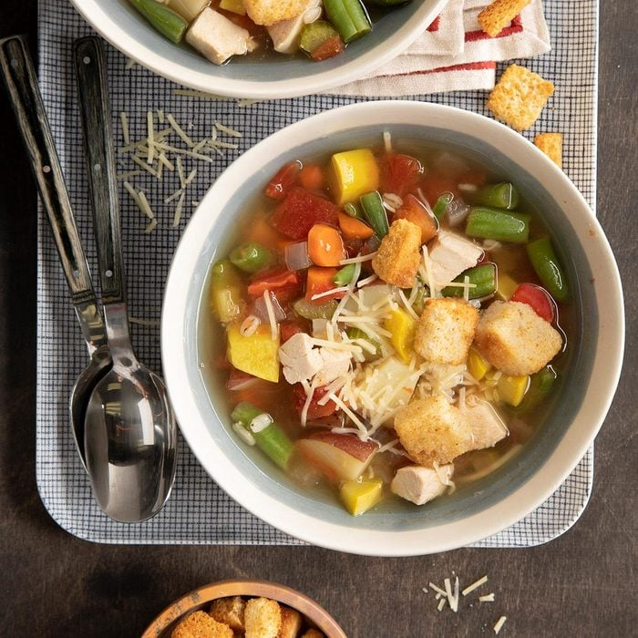

Stone Soup

After reading the Stone Soup story, our Test Kitchen enjoyed concocting this version of the folktale classic. It’s chock-full of veggies and lots more ingredients—enough for everyone to bring something to add to the fun and flavor!
Ingredients
- 4 cans (14-1/2 ounces each) chicken broth
- 4 medium red potatoes, cut into eighths
- 1 yellow summer squash, chopped
- 2 medium carrots, chopped
- 1 medium onion, chopped
- 2 celery ribs, chopped
- 1 teaspoon dried thyme
- 1/2 teaspoon pepper
- 4 cups cubed cooked chicken
- 1 cup frozen cut green beans
- 1/2 cup quick-cooking barley
- 1 can (14-1/2 ounces) diced tomatoes, undrained
- 4 cups salad croutons
- 1 cup shredded Parmesan cheese
Steps
- In a Dutch oven, combine the first 8 ingredients. Bring to a boil. Reduce heat; cover and simmer until vegetables are crisp-tender, 10-15 minutes.
- Stir in the chicken, beans and barley. Bring to a boil. Reduce heat; cover and simmer until vegetables and barley are tender, 10-12 minutes. Add tomatoes; heat through. Serve with croutons and cheese.